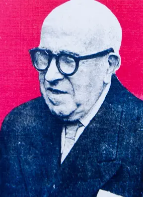
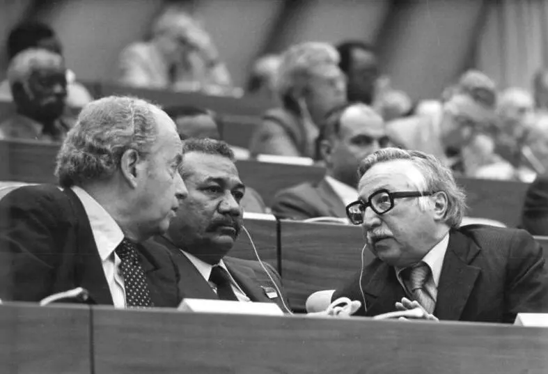
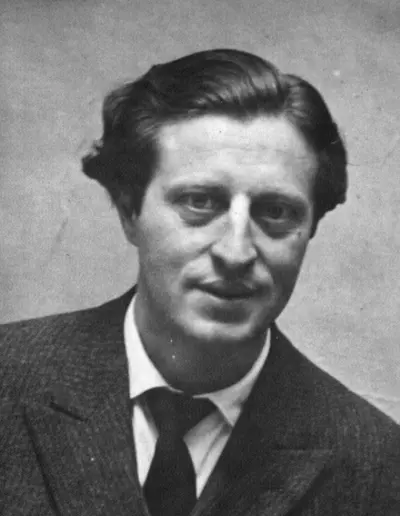
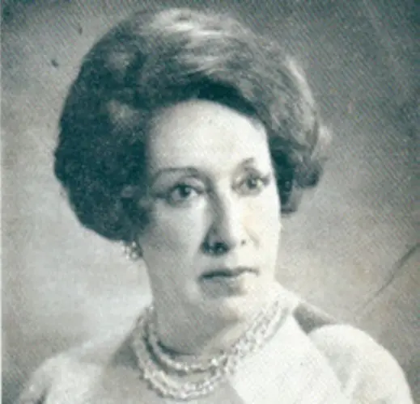
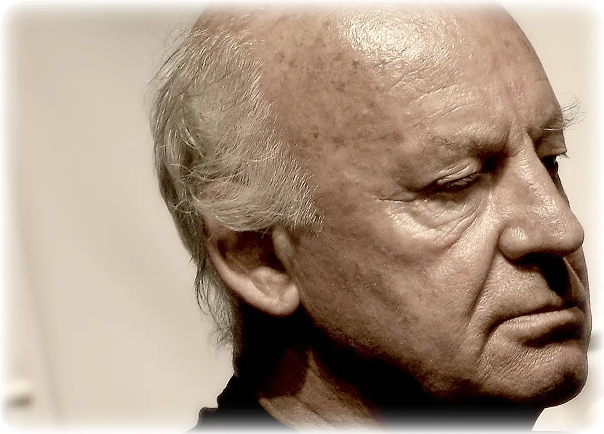
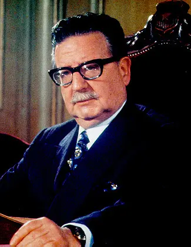
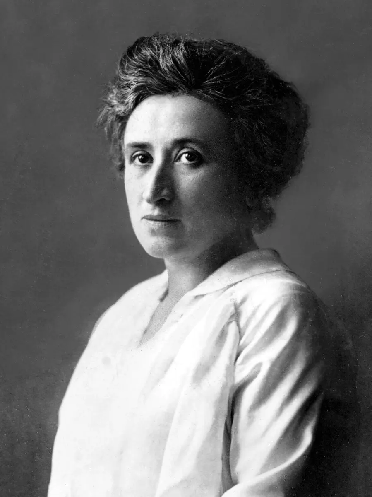
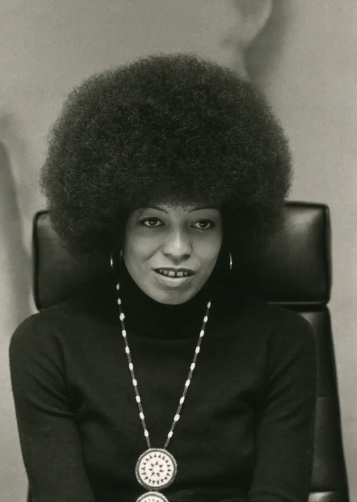
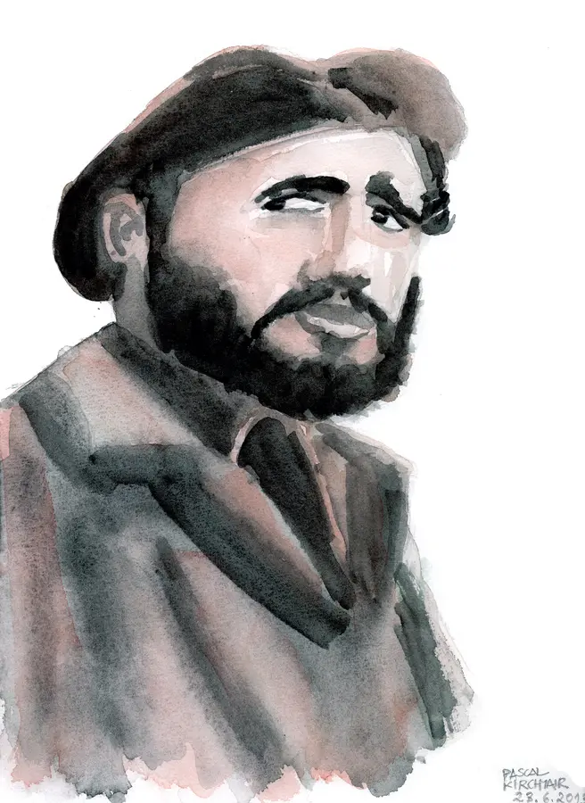
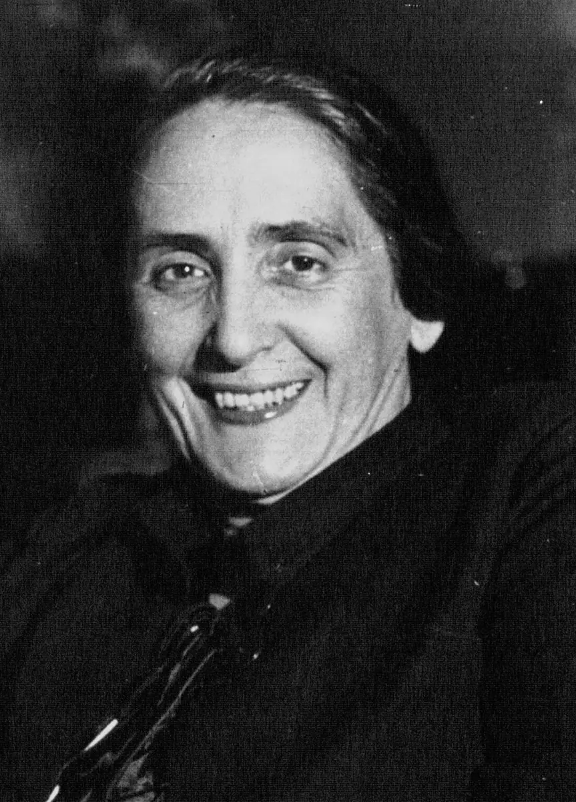

Pensamiento
Karl Marx
Filósofo, economista y periodista alemán. Su crítica del capitalismo, elaborada junto con Friedrich Engels y desarrollada en obras como El capital, influyó profundamente en los movimientos obreros y socialistas.
Historia e ideas
Diecinueve personas vinculadas con distintas tradiciones de izquierda. Incluirlas no significa equiparar sus proyectos ni omitir conflictos, autoritarismos o consecuencias históricas.
Diecinueve voces y trayectorias de distintas corrientes: socialismo, comunismo, antiimperialismo, feminismo, sindicalismo y progresismo latinoamericano.
Pensamiento
Filósofo, economista y periodista alemán. Su crítica del capitalismo, elaborada junto con Friedrich Engels y desarrollada en obras como El capital, influyó profundamente en los movimientos obreros y socialistas.

Revolución rusa
Dirigente bolchevique y figura central de la Revolución de Octubre de 1917. Encabezó la creación del Estado soviético y un modelo político de partido único cuya herencia continúa siendo objeto de debate.

Unión Soviética
Condujo la Unión Soviética durante su industrialización y la derrota del nazismo, pero también fue responsable de purgas, deportaciones, represión política y un sistema autoritario con enormes costos humanos.

América Latina
Médico y revolucionario argentino-cubano. Participó en la Revolución Cubana, ejerció cargos en el nuevo gobierno y promovió la lucha guerrillera internacionalista en África y América Latina.

China
Principal dirigente de la Revolución China y fundador de la República Popular en 1949. Sus campañas transformaron el país, pero el Gran Salto Adelante y la Revolución Cultural causaron persecución y graves pérdidas humanas.

Uruguay
Médico y presidente de Uruguay entre 2005–2010 y 2015–2020. Fue el primer dirigente del Frente Amplio en llegar a la Presidencia y encabezó reformas sociales, sanitarias y tributarias.

Uruguay
Exguerrillero tupamaro, legislador y presidente entre 2010 y 2015. Su gobierno impulsó reformas progresistas y su figura alcanzó proyección internacional por su discurso austero y humanista.

Argentina
Presidente argentino en tres períodos y fundador de un movimiento político heterogéneo. El peronismo articuló derechos laborales, nacionalismo económico y una relación central con el movimiento sindical.

Uruguay
Militar, dirigente político y fundador del Frente Amplio en 1971. Preso durante la dictadura, fue una referencia en la unidad de las izquierdas y en la recuperación democrática uruguaya.

Uruguay
Abogado, poeta y fundador del Partido Socialista del Uruguay en 1910. Defendió los derechos obreros y una vía democrática al socialismo; también sostuvo una posición crítica frente al autoritarismo soviético.

Uruguay
Dirigente y teórico marxista, fue secretario general del Partido Comunista del Uruguay durante más de tres décadas. Promovió una estrategia de masas, alianzas amplias y unidad política que influyó en la formación del Frente Amplio.

Uruguay
Senador, fundador de la Lista 99 y del Frente Amplio. Desde el exilio denunció la dictadura y sus violaciones a los derechos humanos. Fue secuestrado y asesinado en Buenos Aires en 1976, en el marco del Plan Cóndor.

Uruguay
Abogada, poeta y primera mujer ministra de Uruguay. Renunció al gobierno de Pacheco Areco por profundas diferencias políticas y, con su movimiento Pregón, participó en la fundación del Frente Amplio en 1971.

Uruguay
Periodista y escritor uruguayo, autor de Las venas abiertas de América Latina y Memoria del fuego. Su obra enlazó literatura, memoria popular, crítica al colonialismo y denuncia de las desigualdades continentales.

Chile
Médico y presidente de Chile entre 1970 y 1973. Intentó construir una vía democrática al socialismo, nacionalizó el cobre e impulsó reformas sociales. Murió durante el golpe de Estado que inauguró la dictadura de Pinochet.

Europa
Teórica marxista y revolucionaria polaco-alemana. Defendió el internacionalismo, la huelga de masas y la participación democrática de la clase trabajadora. Se opuso a la Primera Guerra Mundial y fue asesinada en Berlín en 1919.

Estados Unidos
Filósofa, docente y activista por la liberación negra. Su pensamiento conecta antirracismo, feminismo, marxismo y abolición del sistema carcelario, y convirtió la solidaridad internacional en parte central de su militancia.

Cuba
Principal dirigente de la Revolución Cubana de 1959. Su gobierno amplió salud, educación y soberanía nacional, pero concentró el poder en un sistema de partido único que persiguió disidencias y restringió libertades políticas.

España
Dirigente comunista conocida como “La Pasionaria”. Fue una voz decisiva de la resistencia republicana al franquismo, vivió décadas de exilio y regresó para ocupar una banca durante la transición democrática española.